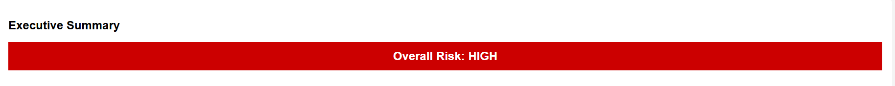
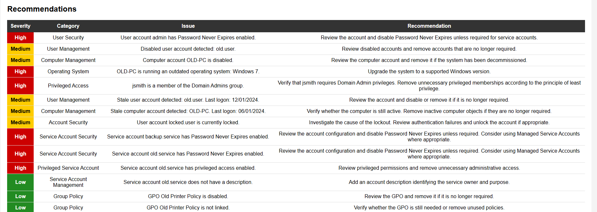
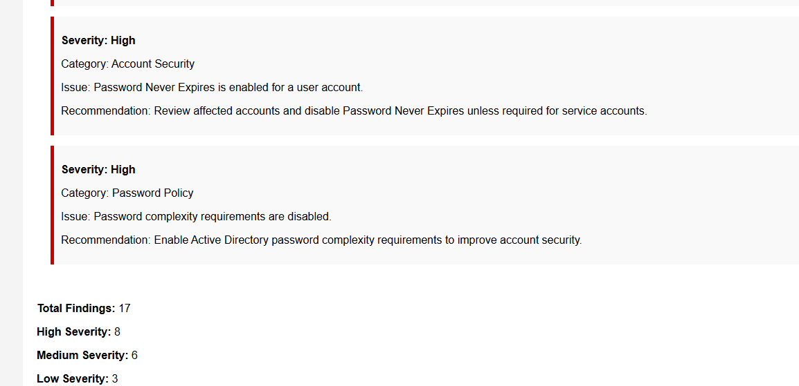

Enterprise AD & GPO Auditor
A PowerShell-based Active Directory auditing tool designed to simulate enterprise infrastructure health and security reviews.
OVERVIEW
What I Built
The Enterprise AD & GPO Auditor is a PowerShell-based auditing tool designed to collect information from Windows and Active Directory environments, identify potential security and configuration issues, and generate actionable recommendations.
The project was designed around the type of health checks and security reviews commonly performed by Systems Administrators, Active Directory Administrators, and Infrastructure Engineers.
The tool includes a Test Mode so the auditing and reporting functionality can be developed and demonstrated without requiring access to a production Active Directory environment.
CAPABILITIES
What the Auditor Checks
User Auditing
Reviews account status, password expiration configuration, stale accounts, locked accounts, and service account configuration.
Computer Auditing
Reviews computer objects, operating systems, disabled accounts, stale systems, and outdated Windows installations.
Group Policy
Inventories Group Policy Objects and identifies disabled or unlinked policies that may require review.
Security Auditing
Reviews password policy settings, privileged access, service accounts, and other security configuration concerns.
Recommendation Engine
Converts audit findings into severity-rated, actionable remediation recommendations.
HTML Reporting
Generates an easy-to-read HTML report containing executive-level risk information, findings, and recommendations.
ARCHITECTURE
Project Structure
The project is organized into separate auditing and reporting components so that each area of the environment can be analyzed independently.
Configuration
↓
Environment Validation
↓
Domain Audit
↓
User Audit
↓
Computer Audit
↓
Group Policy Audit
↓
Security Audit
↓
Recommendation Engine
↓
HTML Report EngineRESULTS
Example Audit Reports
The auditor converts collected data and findings into an HTML report designed to provide both technical detail and an executive-level summary.
Executive Summary
Provides an overall risk assessment and summarizes the most important security concerns identified during the audit.

Recommendations
Displays severity-rated findings along with recommended remediation actions.

Security Findings
Provides detailed security audit results collected from the simulated Active Directory environment.

EXPERIENCE
What I Learned
This project helped reinforce how Active Directory objects, Group Policy, authentication settings, and privileged access relate to overall enterprise security.
I also gained practical experience designing PowerShell functions around shared report data, processing findings, generating recommendations, and converting technical results into an HTML report intended for different audiences.
Building a Test Mode also reinforced the importance of developing administrative tooling in a controlled environment before using it against production infrastructure.
TECHNOLOGIES
Technologies Used
PROJECT
Explore the Project
View the source code, documentation, and additional project information on GitHub.